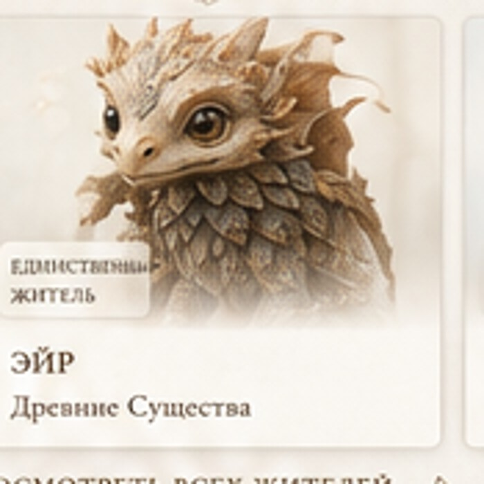
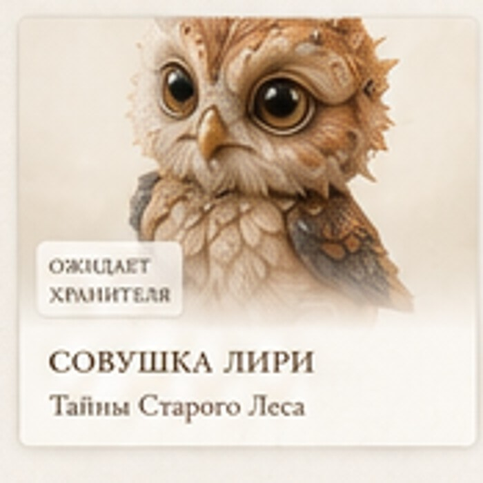
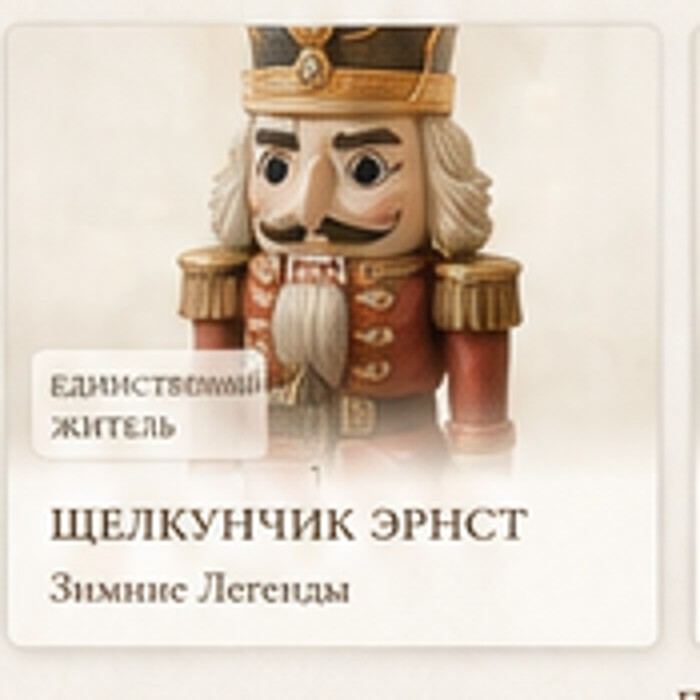
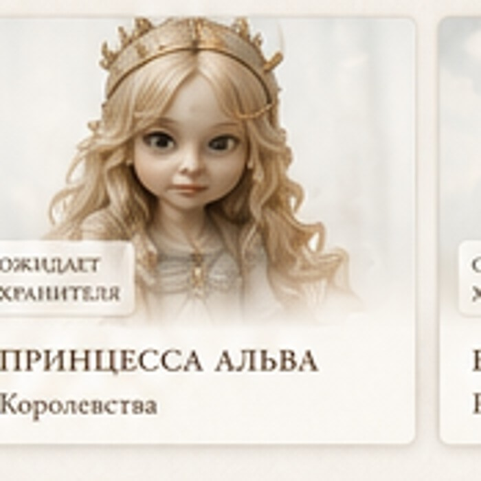
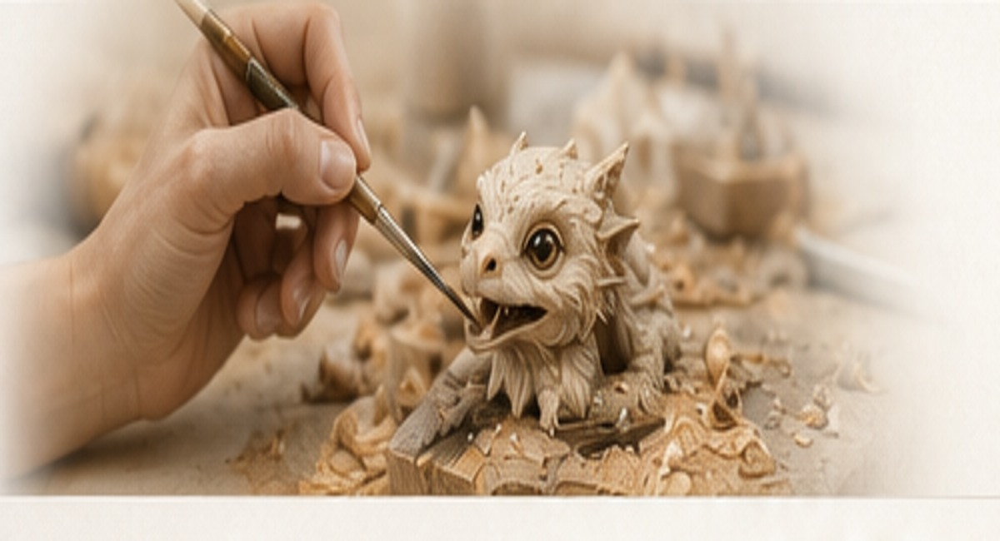

Ручная работа
Каждый Житель рождается в руках Мастера — от первого образа до последнего штриха.
Мастерская Веры
Каждый Житель рождается в руках Мастера — от первого образа до последнего штриха.
У каждого есть имя, характер, история и собственный паспорт.
Вы не просто выбираете фигурку. Вы даёте Жителю дом и продолжаете его историю.
Карта миров
Бестиарий

Древние Существа

Тайны Старого Леса

Зимние Легенды

Королевства

Следы руки
Истории Хранителей
«Когда он появился дома, стало казаться, что он всегда здесь жил — просто раньше прятался».